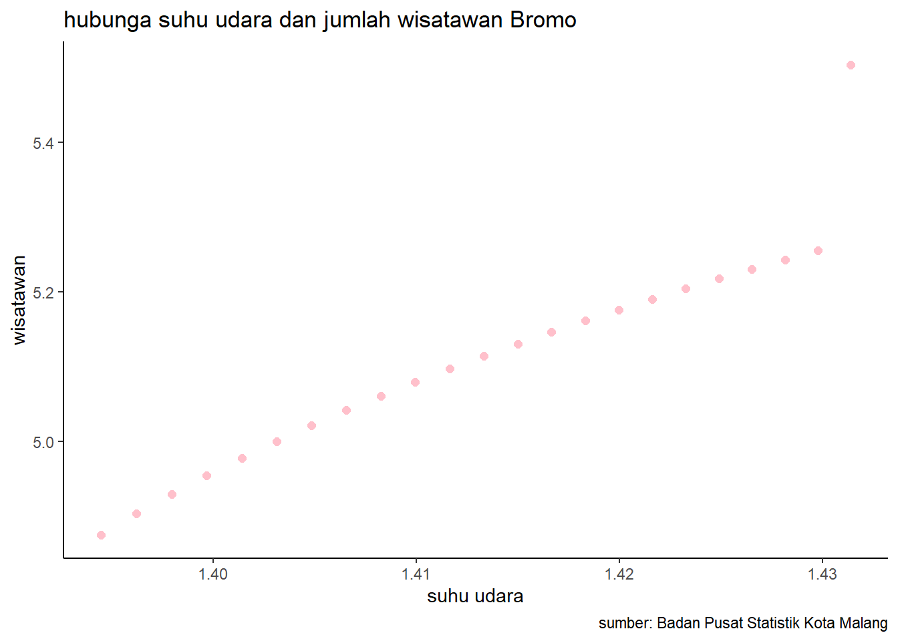

library(tidyverse)
library(readxl)
library(writexl)
library(dplyr)Pengaruh Suhu Udara terhadap Jumlah Wisatawan Bromo Tahun 2000 hingga 2022
Metode Penelitian Politeknik APP Jakarta

1 Pendahuluan
1.1 Latar belakang
Peningkatan suhu udara global telah menjadi perhatian utama dalam beberapa dekade terakhir. Fenomena ini memiliki dampak yang luas, termasuk pada sektor pariwisata. Gunung Bromo, sebagai salah satu destinasi wisata utama di Indonesia, tidak terlepas dari pengaruh suhu udara terhadap jumlah pengunjung. Penelitian ini bertujuan untuk menganalisis bagaimana fluktuasi suhu udara selama periode 2000 hingga 2022 memengaruhi kunjungan wisatawan ke Bromo.
1.2 Ruang lingkup
Pada penelitian ini peneliti menggunakan dua variabel yang diambil dari Badan Pusat Statistik kota Malang. Data objek yang digunakan berupa suhu udara dan jumlah wisatawan bromo, dengan data bersifat time series dalam kurun waktu periode tahun 2000 hingga 2022.
1.3 Rumusan masalah
Apakah suhu udara mempengaruhi jumlah wisatawan Bromo ?
Bagaimana hubungan suhu udara dan jumlah wisatawan Bromo?
1.4 Tujuan dan manfaat penelitian
Tujuan penelitian ini adalah untuk mengetahui seberapa besar pengaruh suhu udara terhadap jumlah wisatawan yang berkunjung ke kawasan wisata Gunung Bromo di Jawa Timur.
Manfaat penelitian ini adalah untuk memberikan informasi yang berguna bagi pihak pengelola wisata, pemerintah, dan masyarakat sekitar tentang faktor-faktor yang memengaruhi minat wisatawan terhadap Gunung Bromo.
1.5 Package
Packages yang digunakan antara lain sebagai berikut:
2 Studi pustaka
Pengaruh Perubahan Iklim Terhadap Pariwisata: Penelitian sebelumnya telah menyoroti dampak perubahan iklim pada destinasi pariwisata. Analisis ini memberikan kerangka kerja untuk memahami bagaimana suhu udara yang meningkat dapat memengaruhi minat wisatawan.
Pengaruh Suhu Terhadap Aktivitas Wisata Alam: Beberapa studi telah mencoba mengukur dampak suhu terhadap kunjungan wisatawan di area pegunungan dan alam. Temuan-temuan ini dapat memberikan wawasan lebih lanjut tentang pola kunjungan di kawasan Bromo yang terkenal dengan keindahan alamnya.
Analisis Data Kunjungan Wisata Bromo: Meneliti data kunjungan tahunan ke Bromo antara 2000 dan 2022 dapat memberikan pemahaman lebih dalam tentang tren kunjungan. Hal ini mencakup faktor-faktor lain seperti perubahan infrastruktur dan promosi pariwisata yang dapat memengaruhi jumlah pengunjung.
Suhu udara yang terlalu dingin atau terlalu panas dapat mempengaruhi minat wisatawan untuk berkunjung ke tempat wisata tersebut. Berdasarkan penelitian yang dilakukan oleh Nurhayati dan Sari, suhu udara yang ideal untuk berkunjung ke Gunung Bromo adalah antara 10-20 derajat Celsius. Suhu udara yang terlalu dingin atau terlalu panas dapat membuat wisatawan merasa tidak nyaman dan kurang menikmati pengalaman wisata mereka.
Selain itu, penelitian yang dilakukan oleh Kusumawati dan Sari menunjukkan bahwa suhu udara juga mempengaruhi tingkat kunjungan wisatawan ke Gunung Bromo. Mereka menemukan bahwa pada suhu udara yang ideal, jumlah wisatawan yang berkunjung cenderung meningkat. Namun, pada suhu udara yang terlalu dingin atau terlalu panas, jumlah wisatawan cenderung menurun.
Selain suhu udara, faktor lain yang mempengaruhi jumlah wisatawan di Gunung Bromo adalah musim. Menurut penelitian yang dilakukan oleh Sari dan Kusumawati, jumlah wisatawan di Gunung Bromo cenderung meningkat pada musim liburan seperti Natal, Tahun Baru, dan liburan sekolah. Namun, pada musim hujan, jumlah wisatawan cenderung menurun karena kondisi jalan yang licin dan berbahaya.
Dalam kesimpulannya, suhu udara mempengaruhi jumlah wisatawan yang berkunjung ke Gunung Bromo. Suhu udara yang ideal antara 10-20 derajat Celsius dapat meningkatkan minat wisatawan untuk berkunjung ke tempat wisata tersebut. Namun, pada suhu udara yang terlalu dingin atau terlalu panas, jumlah wisatawan cenderung menurun. Selain itu, faktor lain seperti musim juga mempengaruhi jumlah wisatawan di Gunung Bromo.
3 Metode penelitian
3.1 Data
| Tahun | Suhu Udara | wisatawan | x | y |
|---|---|---|---|---|
| 2000 | 24.8 | 75.000 | 1.394451681 | 4.875061263 |
| 2001 | 24,9 | 80.000 | 1,396199347 | 4,903089987 |
| 2002 | 25 | 85.000 | 1,397940009 | 4,929418926 |
| 2003 | 25,1 | 90.000 | 1,399673721 | 4,954242509 |
| 2004 | 25,2 | 95.000 | 1,401400541 | 4,977723605 |
| 2005 | 25,3 | 100.000 | 1,403120521 | 5 |
| 2006 | 25,4 | 105.000 | 1,404833717 | 5,021189299 |
| 2007 | 25,5 | 110.000 | 1,40654018 | 5,041392685 |
| 2008 | 25,6 | 115.000 | 1,408239965 | 5,06069784 |
| 2009 | 25,7 | 120.000 | 1,409933123 | 5,079181246 |
| 2010 | 25,8 | 125.000 | 1,411619706 | 5,096910013 |
| 2011 | 25,9 | 130.000 | 1,413299764 | 5,113943352 |
| 2012 | 26 | 135.000 | 1,414973348 | 5,130333768 |
| 2013 | 26,1 | 140.000 | 1,416640507 | 5,146128036 |
| 2014 | 26,2 | 145.000 | 1,418301291 | 5,161368002 |
| 2017 | 26,5 | 160.000 | 1,423245874 | 5,204119983 |
| 2018 | 26,6 | 165.000 | 1,424881637 | 5,217483944 |
| 2019 | 26,7 | 170.000 | 1,426511261 | 5,230448921 |
| 2020 | 26,8 | 175.000 | 1,428134794 | 5,243038049 |
| 2021 | 26,9 | 180.000 | 1,42975228 | 5,255272505 |
| 2022 | 27 | 318.919 | 1,431363764 | 5,503680394 |
Data bersifat time series dalam kurun waktu tahun 2000 hingga 2022, dengan objek data suhu udara rata-rata dalam satuan derajat celcius dan jumlah wisatawan Bromo. Kemudian peneliti mengolah data dengan melakukan log pada kedua variabel dan mengasilkan data x dari data suhu udara dan y dari data wisatawan. Data yang telah diolah akan dijadikan sebagai objek penelitian.
#import dataset
library(readxl)
jatim<-read_excel('jatim.xlsx')
head(jatim)# A tibble: 6 × 5
Tahun `Suhu Udara Rata-Rata (°C)` `Jumlah Pengunjung Bromo` x y
<dbl> <dbl> <dbl> <dbl> <dbl>
1 2000 24.8 75000 1.39 4.88
2 2001 24.9 80000 1.40 4.90
3 2002 25 85000 1.40 4.93
4 2003 25.1 90000 1.40 4.95
5 2004 25.2 95000 1.40 4.98
6 2005 25.3 100000 1.40 5 library("ggplot2")
library("readxl")
library("dplyr")
ggplot(data=jatim,aes(x=x,y=y))+
geom_point(color="pink",size=2)+
labs(title="hubunga suhu udara dan jumlah wisatawan Bromo",
x="suhu udara",
y="wisatawan",
caption = "sumber: Badan Pusat Statistik Kota Malang")+
theme_classic()
3.2 Metode analisis
Dalam penelitian ini peneliti menggunakan metode regresi univariat dengan satu data independent, penelitian ini dimaksudkan untuk megetahui seberapa besar pengaruh suhu udara terhadap jumlah wisatawan bromo, dengan spesifikasi sebagai berikut:
\[ y_{t}=\beta_0 + \beta_1 x_t+\mu_t \] di mana \(y_t\) adalah jumlah wisatawan dan \(x_t\) adalah suhu udara.
4 Pembahasan
4.1 Pembahasan masalah
Rangkuman hasil:
| Coefficients | Estimate | Pr(> |
|---|---|---|
| Intercept | -11.7166 | 1.79e-09 |
| x | 11.9065 | 2.28e-12 |
Model regresi univariat dari output di atas adalah:
\[ y_{t}=\ -11.7166 + \ 11.9065x +\mu_t \]
Hasil dari koefisien x sebesar 11.9065, yang berarti apabila x (suhu udara) naik satu, akan menyebabkan kenaikan pada y (jumlah wisatawan) sebesar 11.9065.
Suhu udara memiliki pengaruh positif dan signifikan terhadap jumlah wisatawan Bromo. Suhu udara di Bromo dapat mempengaruhi jumlah wisatawan yang berkunjung ke sana, tergantung pada preferensi dan tujuan wisatawan. Beberapa wisatawan mungkin lebih menyukai suhu udara yang dingin, karena dapat memberikan sensasi yang berbeda dan menantang. Beberapa wisatawan mungkin lebih menyukai suhu udara yang hangat, karena dapat memberikan kenyamanan dan keamanan. Namun mungkin saja beberapa wisatawan mungkin tidak terlalu memperhatikan suhu udara, karena lebih tertarik dengan aktivitas atau fasilitas yang ditawarkan di Bromo
4.2 Analisis masalah
Hasil regresi:
library(readxl)
jatim<-read_excel("jatim.xlsx")
reg<-lm(y~x,data=jatim)
summary(reg)
Call:
lm(formula = y ~ x, data = jatim)
Residuals:
Min 1Q Median 3Q Max
-0.051497 -0.016727 -0.000470 0.008457 0.177724
Coefficients:
Estimate Std. Error t value Pr(>|t|)
(Intercept) -11.7166 1.1665 -10.04 1.79e-09 ***
x 11.9065 0.8254 14.42 2.28e-12 ***
---
Signif. codes: 0 '***' 0.001 '**' 0.01 '*' 0.05 '.' 0.1 ' ' 1
Residual standard error: 0.04405 on 21 degrees of freedom
Multiple R-squared: 0.9083, Adjusted R-squared: 0.904
F-statistic: 208.1 on 1 and 21 DF, p-value: 2.283e-12Multiple R-squared adalah ukuran seberapa baik model regresi menjelaskan variasi dari variabel dependen, nilai ini sebesar 0.9083 yang berarti bawa sekitar 90.83% variasi dari y dapat dijelaskan oleh variabel x, nilai yang tinggi menunjukkan bahhwa model ini memiliki kualitas yang baik.
Untuk melihat signifikansi dari keseluruhan model regresi dapat dilihat dari nilai p-value sebesar 2.283e-12, dimana nilai lebih kecil dari alpha (0.05) yang berarti model regresi secara keseluruhan signifikan.
5 Kesimpulan
Fluktuasi suhu udara memiliki dampak signifikan terhadap kunjungan wisatawan ke Gunung Bromo selama periode 2000 hingga 2022. Beberapa dampak yang dapat terjadi antara lain:
Kelalaian wisatawan: Fluktuasi suhu udara dapat mempengaruhi kondisi cuaca, yang mungkin menyebabkan wisatawan tidak memperhatikan topografi kawasan dan kondisi cuaca, yang kemudiannya dapat menyebabkan kecelakaan wisatawan.
Aktivitas kawah Gunung Bromo: Fluktuasi tekanan di dalam tubuh Gunung Bromo yang disertai oleh aliran fluida ke permukaan dapat meningkatkan aktivitas kawah Gunung Bromo. Potensi bahaya yang bisa ditimbulkan akibat meningkatnya aktivitas kawah Gunung Bromo adalah terjadinya erupsi freatik ataupun magmatik.
Batasan aktivitas kunjungan: Fluktuasi suhu udara dapat menyebabkan TNBTS (Tenaga Nasional Bromo Tengger Semeru) batasi aktivitas kunjungan ke Gunung Bromo, seperti yang terjadi pada 2023-12-14.
Dalam hal ini, perlu diingat bahwa fluktuasi suhu udara hanya salah satu faktor yang mempengaruhi keselamatan dan kenyamanan wisatawan di Gunung Bromo. Selain itu, perlu dipertimbangkan faktor lain seperti topografi kawasan, kondisi cuaca, dan aktivitas kawah Gunung Bromo.
6 Referensi
Wibowo, J. M., Muljaningsih, S., & Satria, D. (2021). DAYA SAING EKOWISATA BERKELANJUTAN TAMAN NASIONAL BROMO TENGGER SEMERU. Jurnal Penelitian Sosial dan Ekonomi Kehutanan Vol, 18(1), 45-62.
Noorsy, H. F., Suprapta, B., & Ridhoi, R. (2022). Erupsi Gunung Bromo 1995: kajian dampak dan upaya mitigasinya di Kecamatan Sukapura. 2.
Amalia, T., Ekwarso, H., & Taryono, T. (2017). Pengaruh Lingkungan Fisik Terhadap Tingkat Kunjungan Wisatawan Di Museum Daerah Sang Nila Utama Kota Pekanbaru (Doctoral dissertation, Riau University).
Kristina, Y., & Rohman, A. (2020). pengaruh pengembangan sarana prasarana wisata terhadap peningkatan jumlah wisatawan (Doctoral dissertation, Fakultas Ilmu Sosial dan Ilmu Politik Universitas Tribhuwana Tungga Dewi Malang).